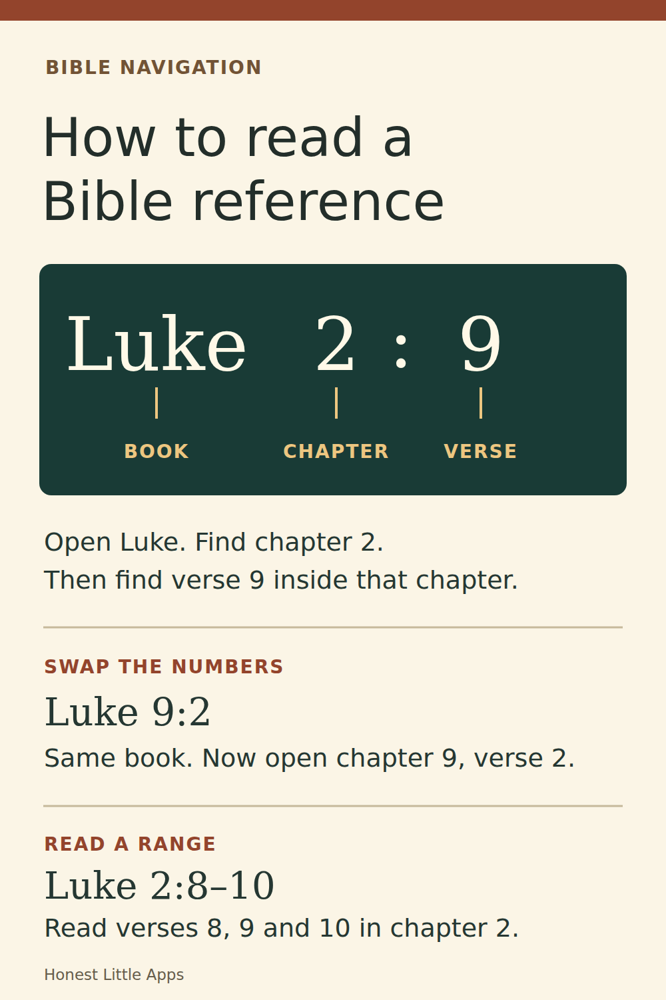

SCROLLWAY / BIBLE NAVIGATION
Find the four Gospels
Matthew, Mark, Luke and John are the four Gospels. Acts comes next. Practice turning to the right book without needing to know a chapter or verse yet.
Choose a book
Your route:
Five trips complete
Look at the bookshelf
- Matthew
- Mark
- Luke
- John
- Acts of the Apostles
PRINT / OFFLINE STATION
Take the five trips to paper
Use a Bible contents page or the five-book shelf above. For each trip, write every book you visit, including the start and destination. Then count each move between books.
Prints two pages. The answer key starts on page two.
HONEST LITTLE APPS · SCROLLWAY COMPANION
Five trips through the Gospels
Name ____________________ Date ____________
Order: Matthew · Mark · Luke · John · Acts. Move one book at a time. Write the full route and number of moves.
- Start at John. Find Luke.Route: ____________________________________Moves: ______
- Start at Mark. Find John.Route: ____________________________________Moves: ______
- Start at Acts. Find Matthew.Route: ____________________________________Moves: ______
- Start at Luke. Find Acts.Route: ____________________________________Moves: ______
- Start at Matthew. Find Mark.Route: ____________________________________Moves: ______
A move means changing from one book to the next book on the shelf. Page numbers do not count.
ANSWER KEY · KEEP SEPARATE DURING PRACTICE
Shortest routes
- John → Luke1 move
- Mark → Luke → John2 moves
- Acts → John → Luke → Mark → Matthew4 moves
- Luke → John → Acts2 moves
- Matthew → Mark1 move
Other routes can still reach the correct book. These are the shortest routes for the five trips in the browser practice.
Continue with book-order and Bible quiz games in Scrollway for iPhone. This paper exercise is a separate companion; work does not transfer to the app.
udrwu9c0tjuedqy2.github.io/hla-faith/scrollway/gospel-book-navigation/
Read the chapter and verse
Once you find Luke, read the numbers in order. In Luke 2:9, the first number is the chapter and the second is the verse. Compare Luke chapter 2 with Luke chapter 9. Swapping the numbers leads to a different passage.

Take it to a real Bible
Open the table of contents and find Mark. Leave a finger there and turn toward John. Which book do you pass? Luke sits between them. Try the same exercise from Acts toward John. The practice counts changes of book, regardless of how many printed pages you turn.
Check the New Testament contents · Read Luke’s road-to-Emmaus story activity
Keep exploring on iPhone
Honest Little Apps publishes Scrollway, a Bible study game with short quizzes and a Bible reader. Its “Old or New?” game asks players to sort verses by testament. This five-book exercise is an independent browser companion.
Explore Scrollway on the App Store ↗
Useful for someone else?
Share the public guide. Your entries and results are not included.
Open the public guide link